Browse the guide
Start hereAll 12 casesDescribe molecular views
Figure 1B1Pocket visibilityFigure 1B5Local to global contextFigure 1B6Preserve an alternate AP5 interaction viewCheck contacts and distances
Figure 1B2Contacts across viewsFigure 4ADocument conserved pocket-water selectionFigure 4CCheck short ligand contactsFigure 4DRecord an Asp110-ligand distanceCompare models and ensembles
Figure 1B3Confidence and geometryFigure 1B4AP5 conformational clustersFigure 4BCompare ranked ligand posesReview trajectories
Figure 4ETrace interaction state changesFigure 4FCompare trajectory repeatsShare and continue
Open a review packageAP5 conformational clusters
Link four displayed AP5 clusters to their coordinate sources, alignment reference and exploratory density plot.
Extract the input ZIP first. The files folder contains the 25 files to select in ClaimTrace; LAB_NOTES.txt contains the example observations.
View the 25 input files
- 4_1_ap5_conformational_landscape.png
- 4_2_ap5_representative_states.png
- 4_1_ap5_conformational_landscape.csv
- B4_PROVENANCE.json
- 4_1_ap5_conformational_landscape.json
- ap5_instance_assignments.csv
- ap5_pca_explained_variance.csv
- ap5_representative_states.csv
- common_ap5_atom_names.json
- pdb_00001ake.cif.gz
- pdb_00001e4v.cif.gz
- pdb_00001e4y.cif.gz
- pdb_00003hpq.cif.gz
- pdb_00003hpr.cif.gz
- pdb_00004x8l.cif.gz
- pdb_00004x8o.cif.gz
- pdb_00005eje.cif.gz
- pdb_00006ham.cif.gz
- pdb_00006hap.cif.gz
- pdb_00008bqf.cif.gz
- pdb_00008pvw.cif.gz
- pdb_00008q2b.cif.gz
- pdb_00009l14.cif.gz
- pdb_00009r6u.cif.gz
- pdb_00009r71.cif.gz
- 1. Import the example files
- 2. Write one figure statement
- 3. Record the plot context
- 4. Choose the supporting files
- 5. Select all coordinate sources
- 6. Record the finding and settings
- 7. State the interpretation limit
- 8. Review the short audit
- 9. Check the draft export
- 10. Download the package
Import the example files
Extract the input ZIP and read LAB_NOTES.txt beside the files/ folder. In ClaimTrace, click Choose files on the welcome page, or Start with files in an open package. Select all 25 files inside files/. Enter the package name below and click Create package.
| Package name | Figure 1B4 - AP5 conformational clusters |
|---|
Check: The package opens in Prepare with 25 saved files and the figure visible.
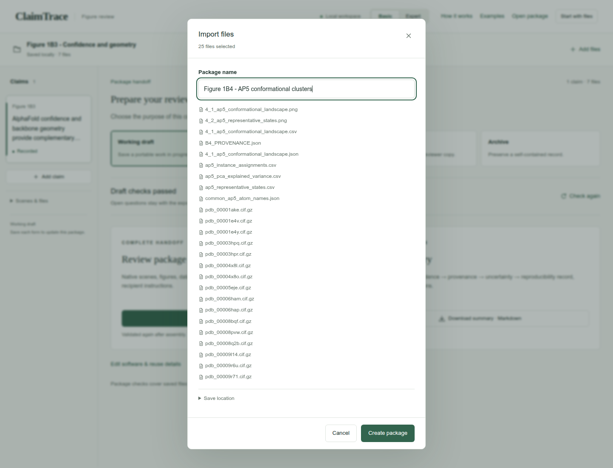
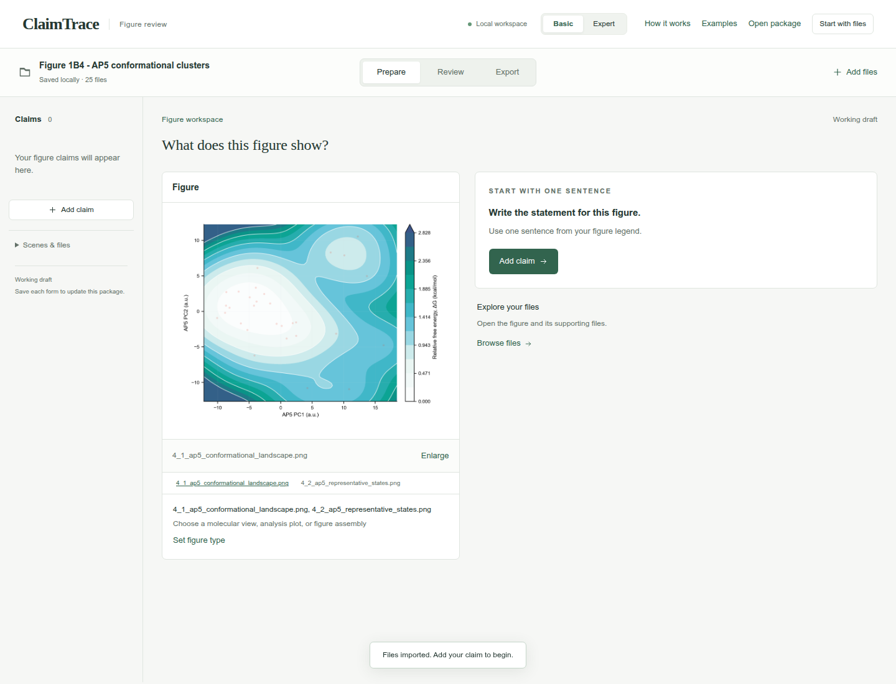
Write one figure statement
Click Add claim. Enter the statement and figure label, choose the statement type, and click Save claim.
| Figure statement | Thirty AP5 instances form four descriptive conformational clusters. |
|---|---|
| Figure label | Figure 1B4 |
| Statement type | Model comparison |
Check: The statement appears in the left claim list and the figure stays linked.
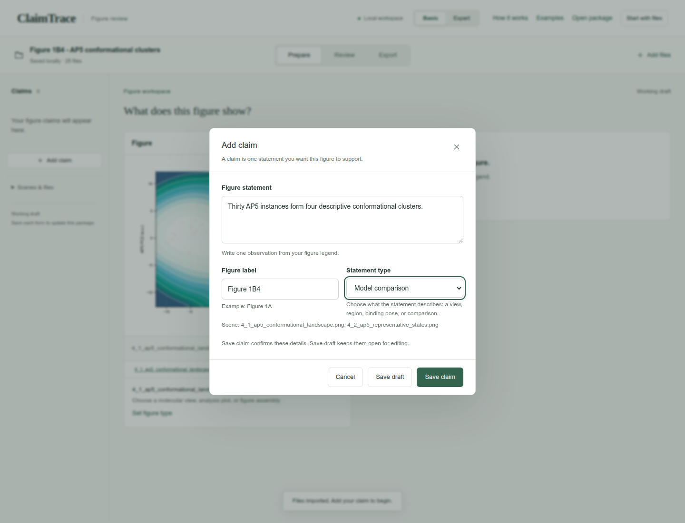
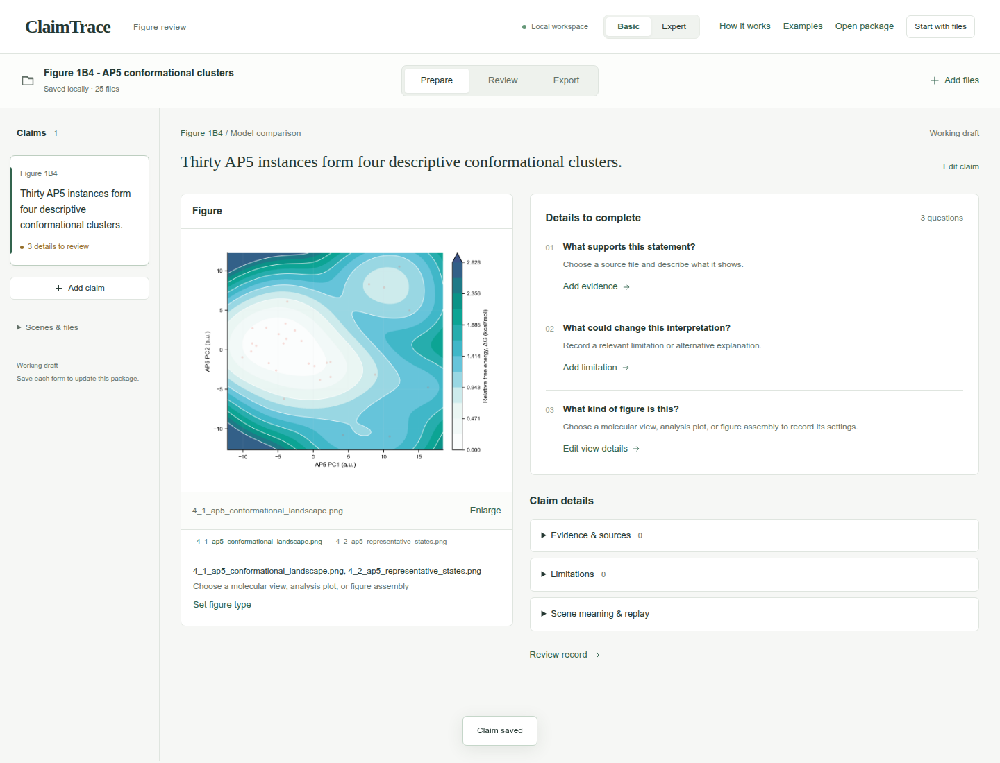
Record the plot context
Click Set figure type. Choose Analysis plot, enter the Plot settings, and click Save details.
| View type | Analysis plot |
|---|---|
| Plot settings | PC1 versus PC2 for 30 AP5 instances with four cluster assignments. The saved surface applies -kB*T*ln(P/Pmax) to a KDE of these crystallographic samples at a chosen 300 K display temperature. Representatives: 4X8O B, 5EJE B, 6HAM A and 8Q2B A. |
Check: The figure shows Saved figure · Settings recorded.
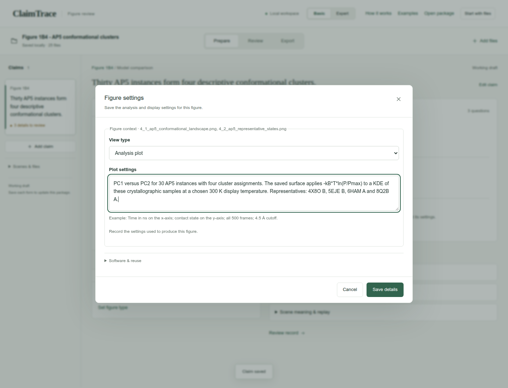
Choose the supporting files
Click Add evidence. Choose the Evidence type and select the listed Source files. Continue in this form for the next step.
| Evidence type | Comparison or validation report |
|---|---|
| Source files | 4_1_ap5_conformational_landscape.csv
B4_PROVENANCE.json
ap5_instance_assignments.csv
ap5_pca_explained_variance.csv
ap5_representative_states.csv |
Check: The source counter shows 5 selected.
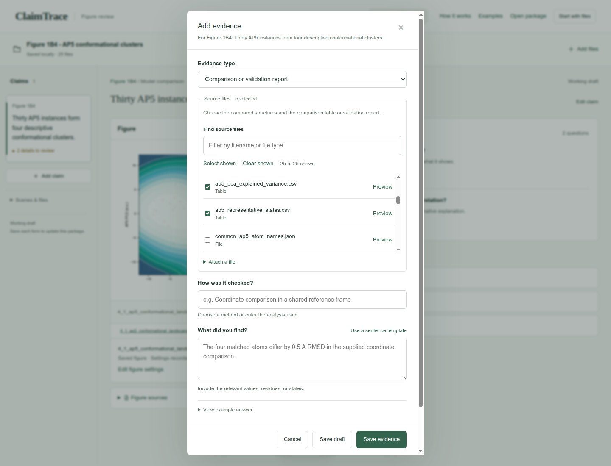
Select all coordinate sources
In Find source files, type .cif.gz. Click Select shown. Confirm 16 of 25 shown and 21 selected, then clear the search field.
| Find source files | .cif.gz |
|---|
Check: All 16 coordinate files join the 5 selected processed sources.
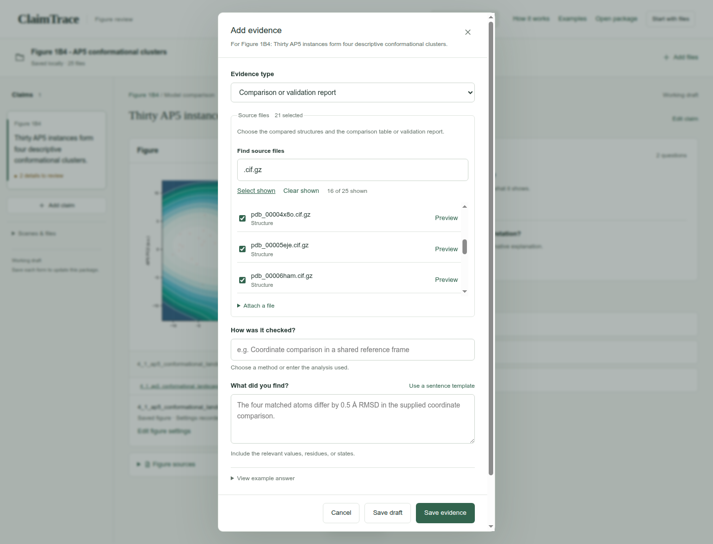
Record the finding and settings
Enter the method under How was it checked? and the observation under What did you find? Open Analysis settings and complete Selections, cutoffs and sampling. Click Save evidence.
| How was it checked? | Review the supplied protein-aligned AP5 coordinates, standardized-coordinate PCA, clustering and density summaries. |
|---|---|
| What did you find? | The supplied assignments retain 30 AP5 instances from 15 of 16 input PDB entries and identify four clusters. PC1 and PC2 explain 32.66% and 14.19% of the variance. |
| Selections, cutoffs and sampling | Alignment: corresponding protein C-alpha atoms to 1AKE chain A. Features: 55 AP5 heavy atoms after applying that protein alignment; standardized coordinates. Clustering: KMeans on PC1 and PC2, four clusters, random state 19, n_init 50. Excluded instances: 8PVW A and 9R6U A. Representatives: 4X8O B, 5EJE B, 6HAM A and 8Q2B A. |
Check: The evidence record appears under Evidence & sources.
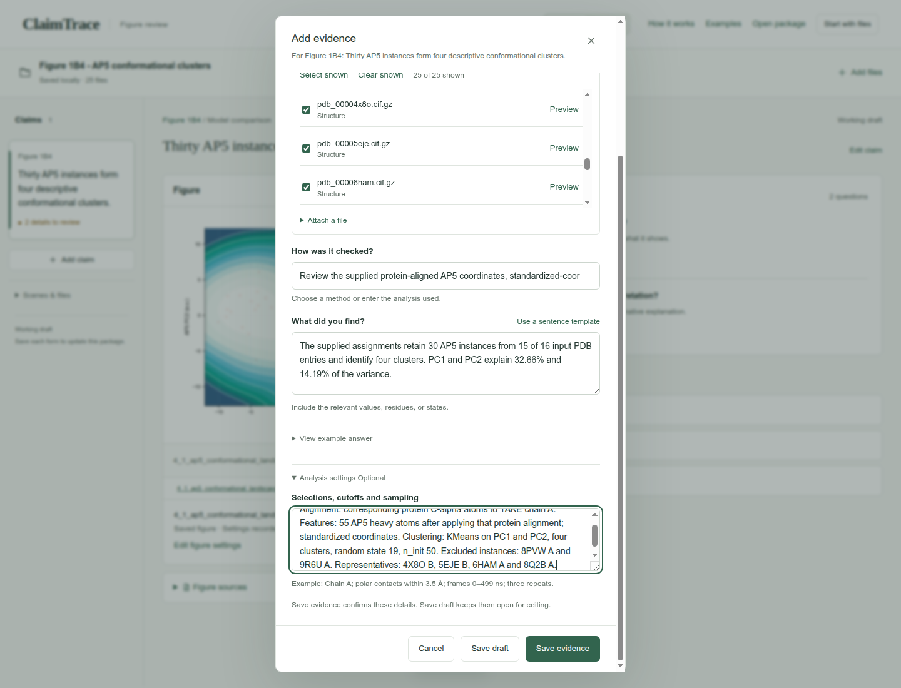
State the interpretation limit
Click Add limitation. Enter the limitation and click Save limitation.
| What limits this conclusion? | The landscape is an exploratory density transform of a crystallographic sample. Its energy-like scale depends on the selected structures, alignment, KDE and chosen display temperature; thermodynamic interpretation requires equilibrium sampling. |
|---|
Check: Limitations shows 1 saved record.
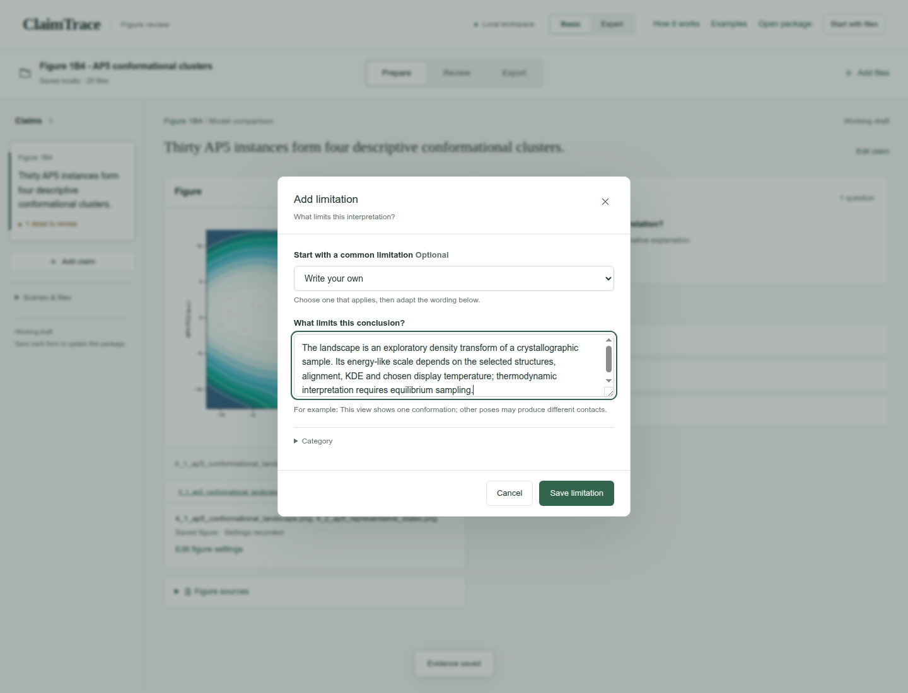
Review the short audit
Click Review. Read the five rows of the Claim audit and confirm the evidence and limitation match the figure.
Check: Claim, visual evidence, provenance, uncertainty, and reproducibility appear together.
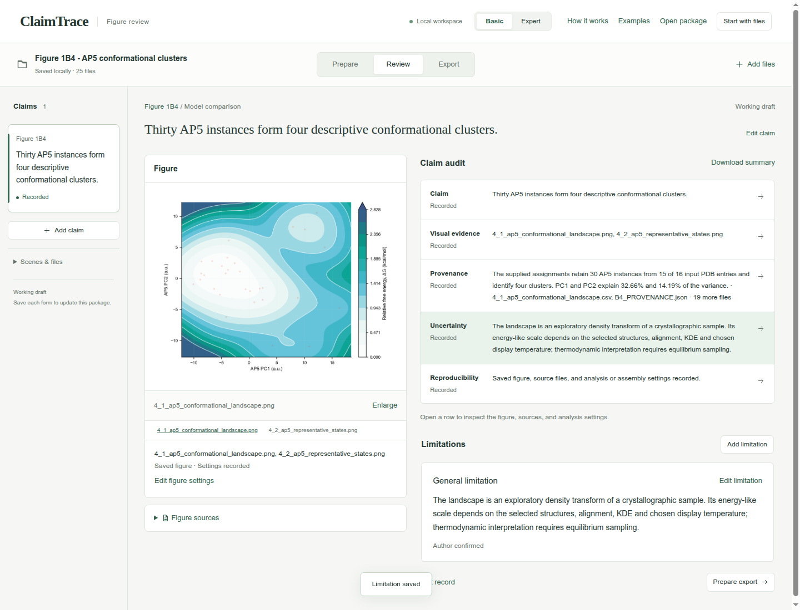
Check the draft export
Click Export. Keep Working draft selected and confirm Draft checks passed.
| Export purpose | Working draft |
|---|
Check: Download package · ZIP is enabled.
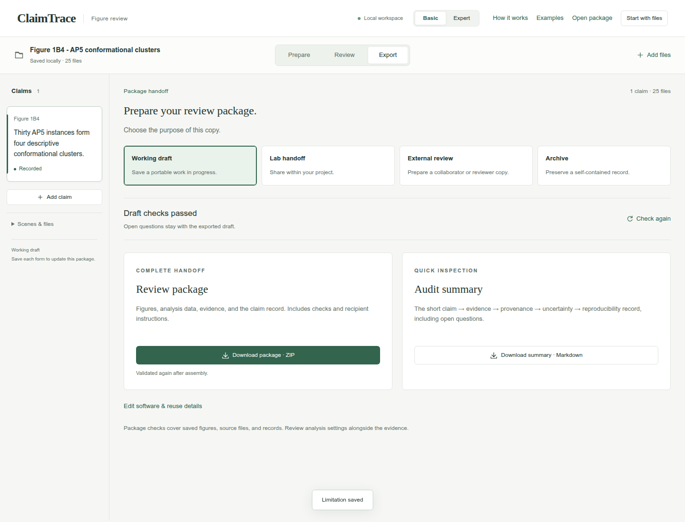
Download the package
Click Download package · ZIP. Check your browser’s downloads for claimtrace-review.zip, then save it with your figure. The ZIP contains the source files, claim record and recipient instructions.
Check: The page confirms: Export checks passed. Your browser will download the package.
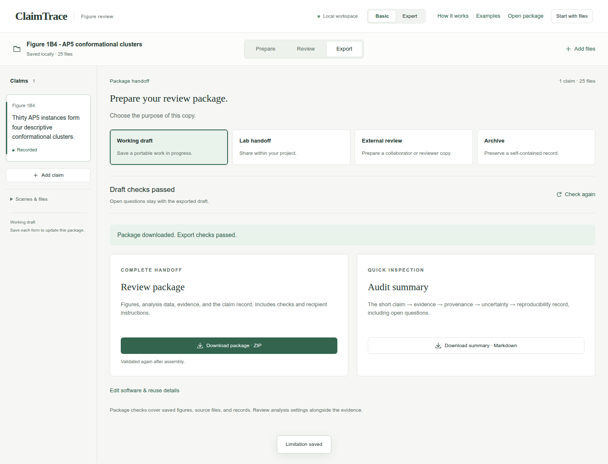
Your saved result
A downloaded Working draft ZIP containing 1 claim, 1 evidence record, 1 limitation, and 25 source files.